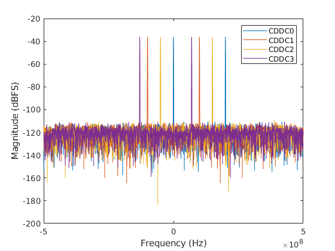

AD9081 Digital Down Converters
The AD9081 has two sets of digital down converters (DDC), the coarse (CDDC) and fine (FDDC), both following the ADC and PFILTs. These are used to both decimate and move signals using the NCOs. They also can be used to phase shift and apply gain to the input signal.
The CDDCs and FDDC are almost identical except for their available decimations, allowable rates, and count. There are two CDDCs per ADC pair and four FDDCs per ADC pair. In the data pipeline, data from the ADCs will be passed through the CDDCs, or bypass the CDDCs, then routed through a mux into the FDDCs, which can also be bypassed.
Top-Level Control
The CDDC and FDDC decimations are controlled by MainDataPathDecimation and ChannelizerPathDecimation respectively.
MainDataPathDecimation Main Data Path Decimation
Specify the decimation in the main data path which can be
[1,2,3,4,6]
ChannelizerPathDecimation Channelizer Path Decimation
Specify the decimation in the channelizer path which can be
[1,2,3,4,6,8,12,16,24]
Muxing
The CDDC pairs share a common full crossbar to the four downstream FDDCs connected to them. This is represented by a single crossbar that limits routes to the halves of AD9081. This crossbar or mux is controlled by the Crossbar4x8Mux2 and will constrain all the mappings.
Crossbar4x8Mux2 Crossbar 4x8 Mux2
Array of input and output mapping. Index is the output and the
value is the selected input (values should not exceed 4)
NCO Mixer Enable and Modes
If the NCOs need to be used they must be individually enabled through the CDDCNCOEnable and FDDCNCOEnable properties, which are both arrays of booleans.
NCO Frequency and Phase
Once the NCOs are enabled the frequencies and phases of the NCOs can be controlled individually. This is done through the CDDCNCOFrequencies, FDDCNCOFrequencies, CDDCNCOPhases, and FDDCNCOPhases. The frequencies will be limited based on the rate going into the NCO at that stage. Note that both the frequency and phase values are internally quantized to 48-bits based on the effective range of the NCO based on the sample rate into a given stage.
Example Configuration
The example below take a single input tone and shifts it into separate channels using the CDDC NCOs.
rx = adi.sim.AD9081.Rx;
% Enable 3 NCOs to shift single into different bands
rx.MainDataPathDecimation = 4;
rx.CDDCNCOEnable = [true,true,true,false];
rx.CDDCNCOFrequencies = [5e7,-3e7,1e8,0];
rx.Crossbar4x8Mux2 = [1,2,1,2,3,4,3,4];
% Create sinewave input
sw = dsp.SineWave;
sw.Amplitude = 1.4*0.5;
sw.Frequency = 100e6;
sw.SampleRate = rx.SampleRate;
sw.SamplesPerFrame = 4e4;
data = sw();
[o1,o2,~,~,o5,o6] = rx(data,data,data,data);
outputCodes = [o1,o2,o5,o6];
% Plot spectrum
Nfft = length(outputCodes);
fullscale = 2^15; fs = rx.SampleRate/4;
win = kaiser(Nfft,100);
win = win/sum(win);
win = win*Nfft;
outputCodes = double(outputCodes).*win;
spec = fft(outputCodes) / Nfft;
spec_db = 20*log10(abs(spec)/fullscale+10^-20);
df = fs/Nfft; freqRangeRx = (-fs/2:df:fs/2-df).';
plot(freqRangeRx,fftshift(spec_db));
legend('CDDC0','CDDC1','CDDC2','CDDC3')
xlabel('Frequency (Hz)');ylabel('Magnitude (dBFS)');
